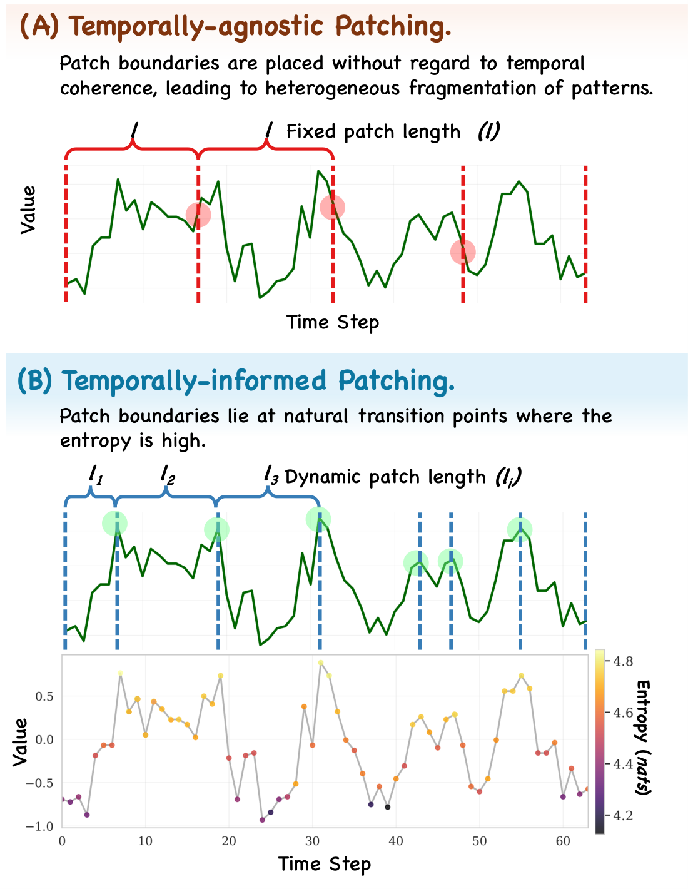
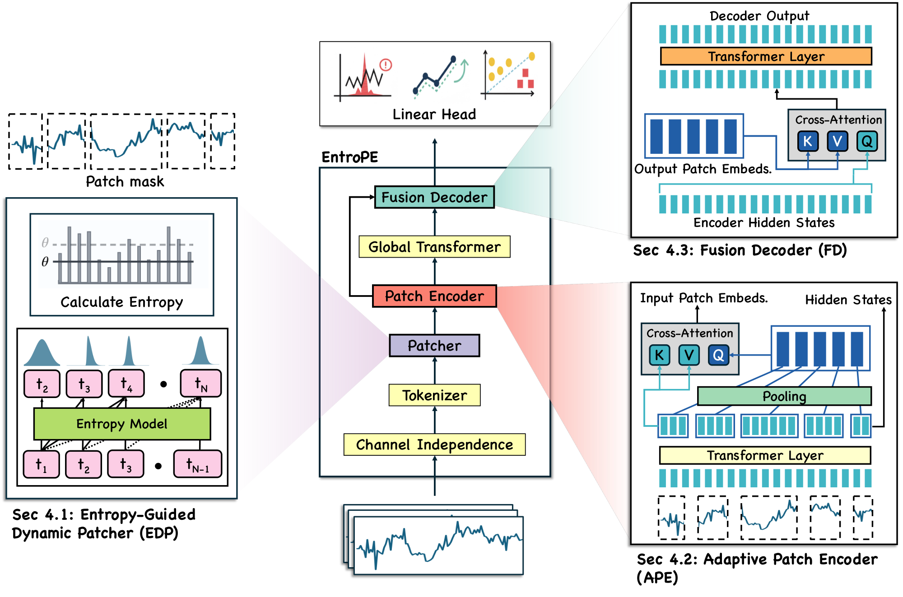
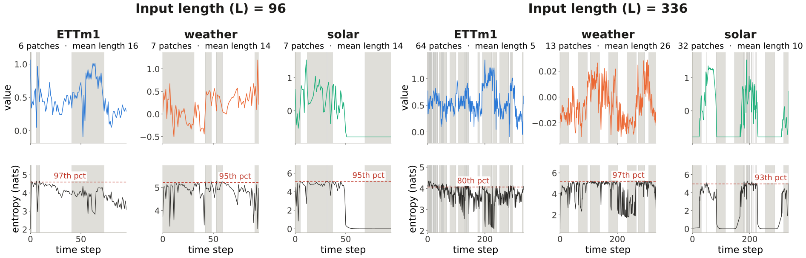
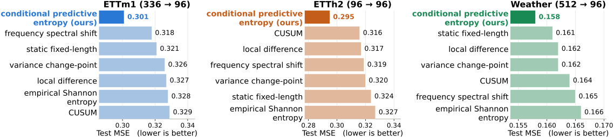
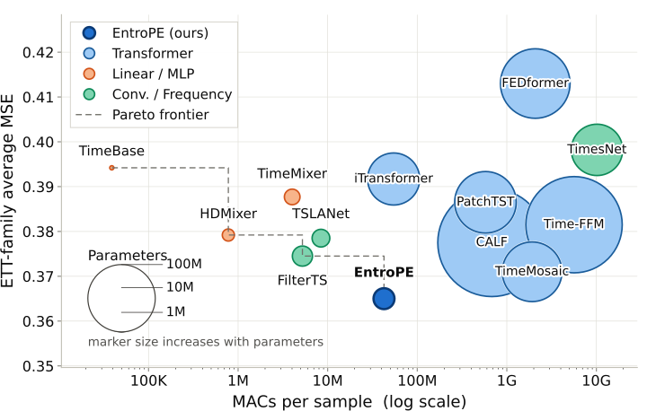
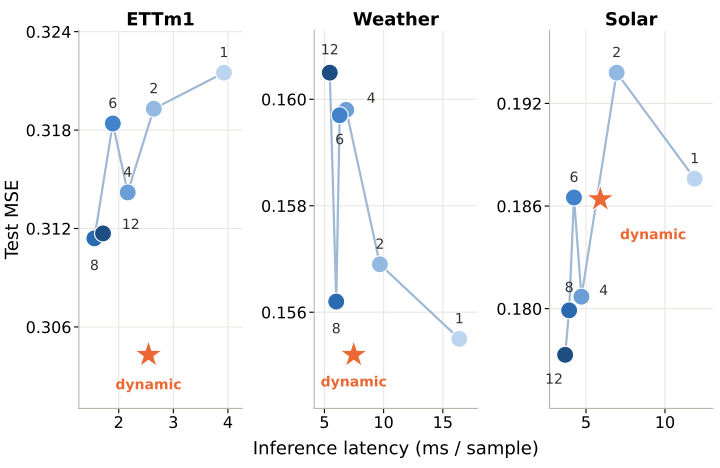

Frozen entropy model
A 2-layer GPT-style transformer (about 16K parameters) learns next-token prediction on quantized values, then is frozen. Quantization is used only to estimate entropy.
EntroPE
*Corresponding author
Interactive sketch on a synthetic signal with a toy entropy estimator. It shows the mechanism; the numbers are for this window only. The paper measures 2.8× lower within-patch variance across 6 real datasets.
TL;DR. Patch-based transformers chop time series into fixed windows that often cut straight through a transition. EntroPE asks a tiny frozen model “how unpredictable is the next step?” and starts a new patch wherever the answer is “very”. Patches then follow the signal's own structure, which improves forecasting, classification, and anomaly detection while using far fewer parameters.
lower average MSE than PatchTST across 8 forecasting datasets
fewer parameters than PatchTST (and 78.5% fewer MACs)
more internally homogeneous patches than fixed patching
of detected boundaries fall at high-uncertainty positions
Patch-based transformers have emerged as efficient, improved architectures for long-horizon time series modeling. Yet existing approaches rely on temporally-agnostic patch construction, in which arbitrary starting positions and fixed lengths fracture temporal coherence by splitting natural transitions across patch boundaries. This naive segmentation often disrupts short-term dependencies and weakens representation learning.
We propose a novel Entropy-Guided Dynamic Patch Encoder (EntroPE), a temporally informed framework that dynamically detects transition points via conditional entropy and dynamically places patch boundaries. This preserves temporal structure while retaining the computational benefits of patching. EntroPE consists of 2 key modules, namely an Entropy-Guided Dynamic Patcher (EDP) that applies information-theoretic criteria to locate natural temporal shifts and determine patch boundaries, and an Adaptive Patch Encoder (APE) that employs pooling and cross-attention to capture intra-patch dependencies and produce fixed-size latent representations.
Extensive experiments on long-term forecasting, classification, and anomaly detection demonstrate that the proposed method improves both accuracy and efficiency, establishing entropy-guided dynamic patching as a promising new paradigm for time series modeling.
Boundaries should sit where the past stops being enough to predict the future.
Fixed-length patching treats time as homogeneous. This causes two problems. First, fragmentation: a trend change or seasonal transition gets split across patches, separating related time points. Second, a train–inference mismatch: training sees patches at many offsets relative to the underlying patterns, while inference uses fixed positions.
EntroPE places boundaries at moments of high conditional entropy of the next observation given its history. Regime changes land on patch boundaries, while patch interiors stay predictable and coherent.

A lightweight entropy model decides where to cut; the rest of the network learns from variable-length patches.
A 2-layer GPT-style transformer (about 16K parameters) learns next-token prediction on quantized values, then is frozen. Quantization is used only to estimate entropy.
A new patch starts after positions whose entropy, or rise in entropy, exceeds a per-sample α-quantile. Boundaries can be precomputed and add about 0.1–1.0 s per training epoch.
Max-pooling initialises each patch embedding; cross-attention over the patch's own time points refines it into a fixed-size vector, whatever the patch length.
A transformer models dependencies between patches, and the fusion decoder injects that context back into token states. Predictions stay continuous.

One backbone for forecasting, classification, and anomaly detection; only the task head changes.
Average MSE over 8 datasets and 4 horizons (input length 96). Further left is better.
EntroPE is best on 6 of 9 columns of Table 1, including the overall average. It stays competitive with CALF (~180M parameters) and TimeMosaic (~8M) using ≤0.8M.
Average accuracy (%).
Average F1 (%) on SMD, MSL, SMAP, SWaT, and PSM.
Entropy is the best boundary signal tested. With the architecture held fixed, conditional predictive entropy gives lower MSE than variance change-point, spectral shift, CUSUM, local difference, empirical Shannon entropy, and static boundaries on ETTm1, ETTh2, and Weather. Removing the dynamic patcher costs more than removing the encoder or decoder.




@inproceedings{abeywickrama2026entrope,
title = {Entropy Guided Dynamic Patch Segmentation
for Time Series Transformers},
author = {Abeywickrama, Sachith and Eldele, Emadeldeen and Wu, Min
and Li, Xiaoli and Yuen, Chau},
booktitle = {Advances in Neural Information Processing Systems (NeurIPS)},
year = {2026}
}